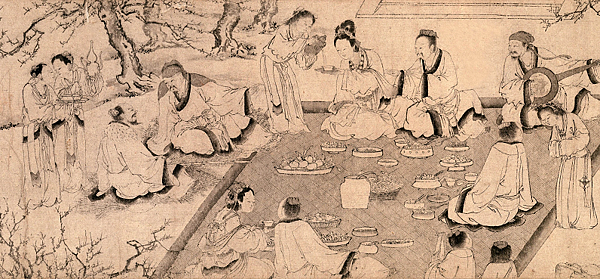

溪邊有二女子，姿質妙絕，見二人持杯出，便笑曰：「劉阮二郎，捉向所失流杯來。」晨肇既不識之，緣二女便呼其姓，如似有舊，乃相見忻喜。問：「來何晚耶？」因邀還家。其家筒瓦屋，南壁及東壁下各有一大床，皆施絳羅帳，帳角懸鈴，金銀交錯。床頭各有十侍婢，敕云：「劉阮二郎，經涉山岨，向雖得瓊實，猶尚虛弊，可速作食。」食胡麻飯、山羊脯、牛肉甚甘美。食畢，行酒，有一群女來，各持五三桃子，笑而言：「賀汝婿來。」酒酣作樂，劉阮忻怖交並。至暮，令各就一帳宿，女往就之，言聲清婉，令人忘憂。
--節錄 南朝宋 劉義慶《幽明錄》
總之就遇到兩個神正妹，劉阮完全不認識兩正妹，但就跟著兩個妹回家去了。跟著回家嚇一跳，正妹家就兩張大床，還「施絳羅帳，帳角懸鈴，金銀交錯」掛聖誕樹裝飾到底要幹啥？接著侍女拿了美食美酒招待，再端出桃子招待，終於天黑了，正妹改以身體招待……總之十天後兩人覺得體力透支了，應該是覺得哪裡怪怪的想回家了，但又被正妹軍團強留半年之久，劉阮思鄉甚苦只好跪求，於是正妹「遂呼前來女子三四十人，集會奏樂，共送劉阮，指示還路」此處與〈桃花源記〉的差別在沒告訴他倆「不足為外人道也」，於是我們就有了個術語叫仙人跳，不是啦，是仙人指路。
後世文人劉阮詩
唐朝劉禹錫〈遊玄都觀〉詩「紫陌紅塵拂面來，無人不道看花回，玄都觀裡桃千樹，盡是劉郎去後裁」
唐朝許渾⟨早發天台中巖寺度關嶺次天姥岑⟩ 來往天台天姥間，欲求真訣駐衰顏。星河半落巖前寺，雲霧初開嶺上關。 丹壑樹多風浩浩，碧溪苔淺水潺潺。可知劉阮逢人處，行盡深山又是山。
明 湯顯祖〈牡丹亭•驚夢〉 春望逍遙出畫堂(張說)， 間梅遮柳不勝芳(羅隱)。 可知劉阮逢人處(許渾)？ 回首東風一斷腸(韋莊)。
